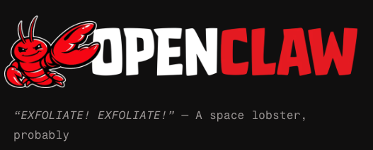

Day 1 — Setting Up OpenClaw

This journey started with a simple idea: what if I could automate parts of the software development process the same way we automate workflows?
Coming from a support engineering background, I spend most of my time investigating issues, writing user stories, and coordinating between customers and developers. I am always close to the solution, but rarely the one building it. OpenClaw immediately stood out to me because it sits right at that intersection. It acts like an autonomous developer that can reason through tasks, generate code, and iterate based on structured input.
Before installing anything, I set a clear goal. I wanted to connect Azure DevOps to an AI agent that could read user stories and attempt to build them. That meant this was not just about trying a tool. It needed to fit into a real workflow from the start.
The installation itself was not a one-click experience. OpenClaw runs as a local service with a web-based control interface, and it expects a specific project structure. Almost immediately, I ran into my first issue: missing UI assets and instructions to build them using pnpm. That led to a short detour where I realized pnpm was not installed, and more importantly, that I was running commands in the wrong directory.
This was the first real lesson. OpenClaw is not plug-and-play. It expects you to understand and respect the environment it operates in.
Once I slowed down and approached it more methodically, the architecture started to make sense. There is a gateway service running locally, a browser-based control UI, and a workspace where your actual project lives. Understanding how these pieces interact was more important than the installation itself.
After working through the setup issues, restarting services, and dealing with a few non-obvious prompts, everything finally came online. The UI loaded, the agent responded, and I was able to send my first prompt successfully.
What stood out immediately was how the agent approached problems. It did not just generate code. It reasoned first, identified ambiguities, and then proposed an approach. That behavior felt much closer to working with a junior developer than interacting with a typical AI tool.
By the end of Day 1, OpenClaw was up and running, but more importantly, I had a better understanding of what it actually is. This is not just a tool you use. It is something you build around. The real value is not in getting it installed, but in figuring out how to integrate it into a system.
Next step: move beyond the UI and start building the automation layer that connects OpenClaw to Azure DevOps.